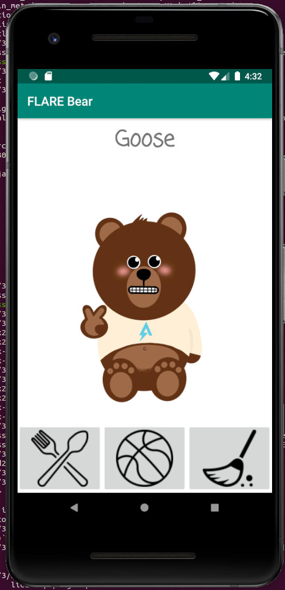
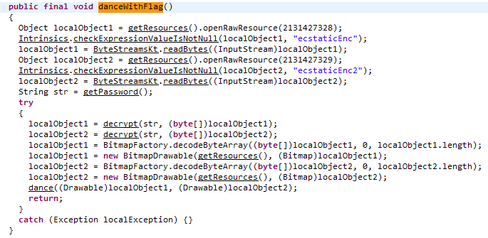
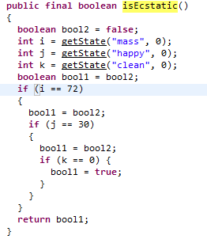
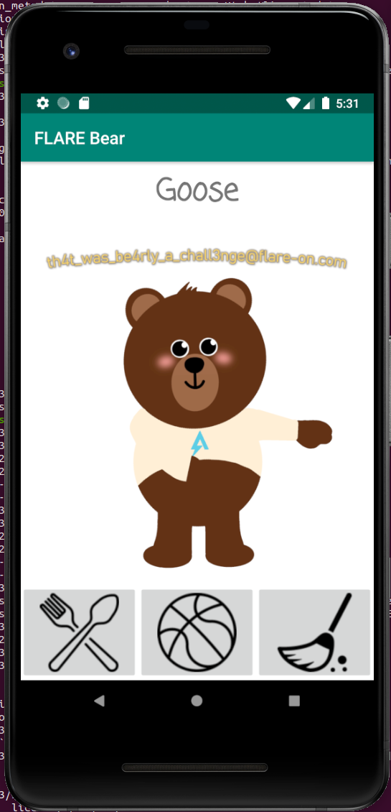

Challenge 3: "Flarebear"
We at Flare have created our own Tamagotchi pet, the flarebear. He is very fussy. Keep him alive and happy and he will give you the flag.
This challenge comes with an apk file which is a format for Android. So for running this, we'll need an android emulator. As for an emulator, I used the
Android Studio. Android Studio does decompilation for you as well. I didn't prefer the decompiled view in Android Studio so i opted to use
dex2jar and jd-gui
Running the program, we start a new game, and name select a name. I named mine Goose.

Goose the bear
We're given 3 activities to do with Goose. Feed him, play Ball with him, or clean up after him. There isn't much else to be gathered from just running it
Lucky for us, the decompiled code isn't stripped or obfuscated and the flow is straightforward. We can view the names of each function for one that is interesting to us. In this case there is one named "danceWithFlag" which we can see has some decryption built in.

danceWithFlag
Searching the rest of the code for useses of the function finds that this function is called within "setMood". danceWithFlag will run if "isEcstatic" returns True.
This function returns true if the variable "mass" is equal to 72, happy is equal to 30, and clean is equal to 0.

isEcstatic
Now we need to find where those variables are set. These are changed in 3 functions. feed, play, and clean.
feed raises the mass 10, raises the happy 2, and lowers the clean 1.
play lowers mass 2, raises happy 4, and lowers clean 1.
clean doesn't change mass, lowers happy 1, and raises clean 6
So to set the state that would trigger the bear to dance with the flag, we need to find a combination to press the buttons when interacting with Goose the bear.
This isn't too tough. Feed him 8x, play with him 4x, and clean him 2x.

danceWithFlag
Flag: th4t_was_be4rly_a_chall3nge@flare-on.com